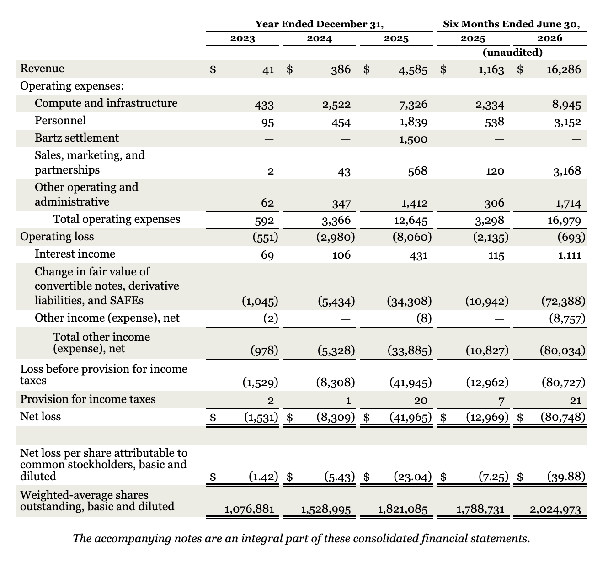
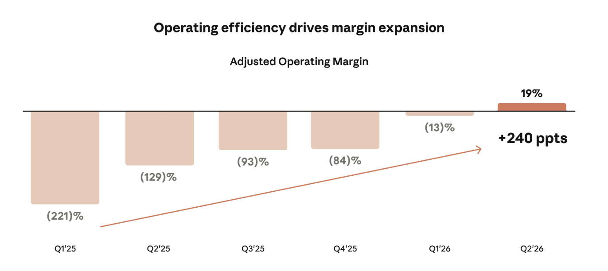

AnthropicのS-1が遂に公開された。
資本主義の歴史において、これほどまでに暴力的な成長曲線と巨額のコミットメントが交錯する目論見書がお目見えしたことがかつてあっただろうか。商業ローンチからわずか3年足らずで、2026年上半期の売上高は前年同期比1,300%増の162.8億ドルに達した。この異常なまでのトップライン成長もさることながら、インクリメンタルな粗利率は90%、Adjusted Operating Margin（調整後営業利益率）はすでに10%の黒字化を達成している。AIは金を燃やすだけのビジネスだという懐疑論者たちを、純粋な決算数値という鈍器で殴りつけるかのような内容である。
このブログでも度々AIインフラ市場の過熱ぶりを指摘してきたが、AnthropicのS-1は単なる一企業の財務開示に留まらない。これはフロンティアモデルを巡る競争環境の劇的な変化、コンピュート効率の暴力、そしてかつての絶対王者であったOpenAIが直面する構造的苦境を浮き彫りにする一級品の一次資料である。今回は、一部のメディアが喧伝する「AIバブル崩壊」という無責任極まりない未来観測的与太話は無視し、彼らの驚異的な利益率、およそ半兆ドルに及ぶコンピュート・コミットメントの真の意図、そしてそれが示唆するOpenAI社の今後の事業戦略への影響に焦点を当てる。

コンピュート効率という名の暴力
Anthropicのビジネスモデルを読み解く上で最も重要な指標は、彼ら自身が定義する「コンピュート効率（Compute Efficiency）」である。
S-1の中に、彼らの自信を象徴する一文がある。「2026年6月30日に終了した3ヶ月間において、売上高が前年同期比で1,368%成長したのに対し、コンピュートおよびインフラストラクチャー費用は300%の増加に留まった」。つまり、支払うコストに対して生み出されるインテリジェンスと収益のレバレッジが、尋常ではないペースで効き始めているのだ。
初期のGenerative AI市場においては、1ドルの売上を立てるために1.1ドルのインフラ費用を支払うような、重厚長大かつ赤字垂れ流しのビジネスモデルが横行していた。最大のベアケースは「LLM（Large Language Model）のAPI提供には粗利がない」というものだった。しかし、Anthropicが提示した事実は全く逆である。限界利益率は極めて高く、推論（Inference）は単体で十分に成立する素晴らしいビジネスモデルであることが証明された。
さらに彼らは、単一のハードウェアベンダーに依存することを意図的に避けている。AWS Trainium、Google TPU、NVIDIA GPU、そしてAMD GPUという4つの主要なチップファミリーにまたがり、独自のオーケストレーション層を用いてワークロードを動的に割り当てている。ハードウェアの進化が著しい昨今、新しいシリコン（例えばGB300など）が登場した際に、それに最適化されたソフトウェアをいち早く書き上げ、マルチチップ環境で稼働させる能力において、彼らの右に出る者はいない。事実上、彼らはClaude自体をコードベースの改善に投下しており、直近3ヶ月間でエンジニア一人当たりのコードコントリビューション量は前年の45倍に跳ね上がり、社内コードの90%以上がClaudeによって書かれているという。この「Closing the loop（自らのAIで次世代のAIを作るループ）」こそが、彼らのソフトウェアエンジニアリングにおける最大のMoat（参入障壁）として機能している。

半兆ドルのコミットメントとネオクラウドの台頭
S-1が公開されるや否や、市場関係者の度肝を抜いたのが、その将来のコンピュート・コミットメントの額である。Googleに約1,145億ドル、Amazonに1,100億ドル、Microsoftに449億ドル、そしてSpaceXAIを中心とするネオクラウド群に1,200億ドル以上。合計するとおよそ5,000億ドル（半兆ドル）規模のインフラ調達契約を結んでいる。
現在、世界のAIインフラ支出は2025年の3,180億ドルから2029年には1兆ドルを超えると予測されており、電力網への投資だけでも7,200億ドルが必要とされている。Anthropicはその需要の最も貪欲な消費者のトップに君臨している。
しかし、数字の暴力性に目を奪われてはならない。この5,000億ドルのコミットメントは、決して彼らの首を絞めるものではない。その内実を見ると、AmazonやGoogleとの契約は、従来の巨大な長期的固定契約（例えばStargateプロジェクトのようなもの）に比べて柔軟に設計されている。さらに特筆すべきは、Elon Musk率いるSpaceXAIやLambda、Nscaleといったネオクラウド事業者との契約だ。
SpaceXAIとの契約などは、オンデマンドに近い柔軟なキャンセル条項が含まれており、バランスシートを不必要に圧迫しない。これは非常にバランスシート効率（ないしはコミットメント効率）が良い。Anthropicは、需要が急増した際の一時的なショートタームのコンピュートをこれらのネオクラウドから調達しつつ、同時に「Anthropic Direct」として自らデータセンター容量を直接リースし、専用インフラを長期的かつ低コストで構築するハイブリッド戦略をとっている。
ここでElon Muskの戦略的な動きも見え隠れする。彼はSpaceXの資本コストを下げるために、ネオクラウド市場で価格破壊を仕掛け、他のネオクラウド事業者の資金調達（デット）を干上がらせようとしているフシがある。Anthropicにとっては、この市場の歪みを利用して短期的かつ安価に計算資源を調達しつつ、自前のデータセンターが立ち上がるまでのトランジションを見事に乗り切る算段がついているということだ。
顧客の集中度とエンタープライズ市場のまだ見ぬ広野
急激なトップライン成長の裏で、顧客基盤の構造も非常に興味深い。S-1によれば、2026年上半期の売上のうち、上位5社で約25%を占めている。また、Amazon BedrockやGoogle Cloud Vertex AIといったCSP（Cloud Service Provider）マーケットプレイス経由の売上が約48%を占める。
一見すると特定の大口顧客（推測するに、Jane Street等のクオンツファンド、Cursor等の開発ツール、あるいはMicrosoft等）への依存度が高いように見える。しかし、彼らのNet Revenue Retention（売上継続率）は約900%という、B2B SaaSの歴史上類を見ない数値を叩き出している。1年前に1ドルを使っていた顧客が、今は9ドルを使っている計算だ。
そして忘れてはならないのは、Fortune 500企業のAI予算シェアはまだ0.1%にも満たないという事実である。現在のAnthropicのARR（Annual Recurring Revenue）は凄まじい規模に達しているが、それでもエンタープライズのIT予算全体から見れば、アスファルトを敷き詰める前の、駐車場の白線を引いている段階に過ぎない。Claude Codeのようなエージェンティックなプロダクトが投入され、トップ5%のヘビーユーザーは一人当たり年間18,000ドルを消費している一方で、一般のエンタープライズユーザーはまだ月額75ドル未満である。このギャップが埋まっていく過程において、Cohorts（顧客集団）の売上はさらに爆発的に伸びていく。
OpenAIの憂鬱と二番手への転落リスク
Anthropicがここまで完璧に近いS-1を提示したことで、最も頭を抱えているのは間違いなくOpenAIだろう。
かつてAI業界の絶対王者であったOpenAIは、現在、極めて中途半端なポジショニングに陥りつつある。コンシューマー向けではGoogle（Gemini）やMetaとの直接対決を強いられ、エンタープライズ向けの最高峰の推論・コーディングタスクにおいてはAnthropicにシェアを奪われている。SemiAnalysisのpodcastでも指摘されていた通り、AIの世界では「Best in breed（最高品質）」であることが何よりも重要であり、OpenAIのモデル（Astra等）が相対的に劣後し始めると、彼らは「Best in price（価格競争）」の泥沼で戦わざるを得なくなる。
Anthropicの最新のOpus 5.5やFable 5.1といったモデルは、性能向上を果たしながらコストを40%削減するなど、圧倒的なコンピュート効率を背景に価格競争力とインテリジェンスの双方で市場をリードしている。OpenAIのARRは依然として巨大だが、その多くは月額20ドルのコンシューマー向けサブスクリプション（ChatGPT Plus等）に支えられている。無料ユーザーへの奉仕を含めると、インフラコストの重圧は相当なものだ。一方のAnthropicは、利益率の高いAPIベース・消費ベース（Pay-for-intelligence）の売上が80%を占めている。
OpenAIが技術的優位性を失い、価格競争を強いられる「Number two」の地位に甘んじることになれば、半導体業界の歴史が示す通り、マージンの低下とシェアの縮小は免れない。エンタープライズ契約においてはOpenAIも反撃に出ているようだが、最新モデルへの移行スピードや、CSPを通じたロックインの強さを考慮すると、Anthropicの優位性はしばらく揺るがないだろう。
PBCという特異なガバナンスと、迎合しない姿勢
最後に、Anthropicの企業としての異質さについて触れておく。彼らは自らをPublic Benefit Corporation（PBC）として位置づけ、LTBT（Long-Term Benefit Trust）と呼ばれる独立した信託機関に取締役の過半数の選任権を持たせている。また、創業者たちが構成するFounder LLCは50.1%の議決権を握り続ける。
これは何を意味するか。彼らは株主の金銭的利益と同等以上に、AIの安全性と人類の長期的利益（Company Purpose）を優先すると法的に宣言しているのだ。S-1の中で彼らは、サイバーセキュリティの脆弱性発見などの高度な能力を持つモデル（Mythosなど）について、商業的な機会を逃してでも、公開を遅らせたりアクセスを制限したりした過去の実績を堂々と記載している。
さらに驚くべきは、市場からの短期的な期待に対する彼らのスタンスだ。「我々の製品や投資の決定は、短期的な財務結果を最大化するものではないかもしれない」と目論見書に明記し、過剰な期待を持たせない（Underpromise）姿勢を貫いている。ウォール街の常識からすれば狂気の沙汰だが、この「迎合しない姿勢」こそが、優秀なAIリサーチャーを惹きつけ、世界最高のタレント・デンシティ（人材密度）を維持する源泉となっている。
総じて、AnthropicのS-1は、彼らが単なる技術的勝者であるだけでなく、AIインフラのサプライチェーン、エンタープライズの予算獲得、そして資本市場との向き合い方において、極めて高度な戦略的思考を持つ企業であることを証明した。OpenAIとの頂上決戦はまだ続くが、現状においてAnthropicがAI業界の主導権を握りつつあることは疑いようのない事実である。
参考リンク: